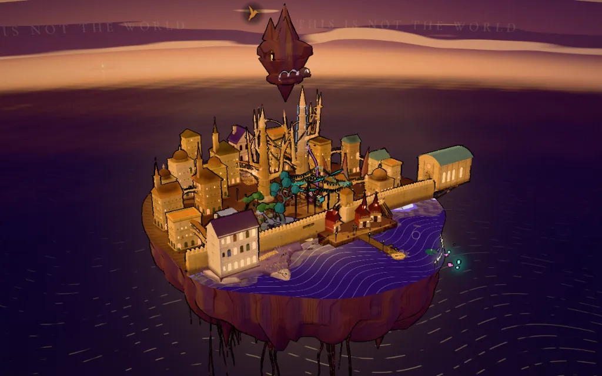

Elysicester

Elysicester, held still
This browser can't draw the city as it moves (it has no WebGL to lend), so Elysicester arrives as a still: one dusk, drawn once. Its reading points are listed here, and every one of them opens.
Elysicester is drawn by script. Without it, the city stays in the book: Numbers by Paint.